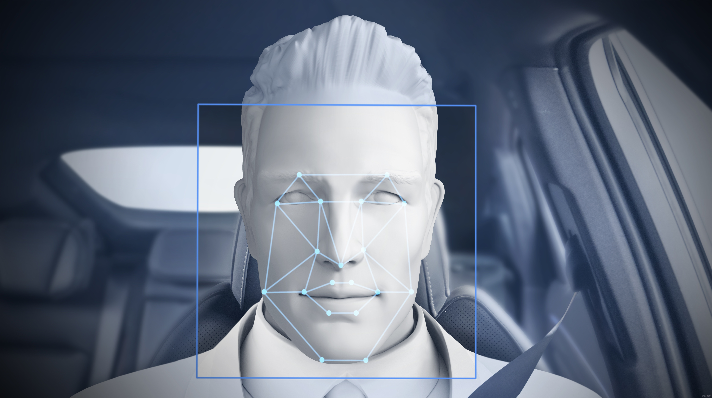

功能介绍
| 人脸检测定位 | 图片质量控制 | 150关键点定位 | |||
| 检测图片中的人脸并标记出人脸坐标，支持同时识别多张人脸 | 分析图片中的多种特征，确保图片符合质量标准 | 精准定位包括双眼、口、鼻等人脸关键点 | |||
功能演示
|  | |
功能介绍
| 主流算法 | 服务稳定高效 | 灵活简单易用 | |||
| 基于caffe框架和海量数据训练，算法识别准确率高 | 提供企业级稳定，精确的大流量服务。支持毫秒级的识别响应能力，弹性灵活的高并发 | 可对SDK进行二次开发，灵活调整业务代码，实现不同的业务功能 | |||
使用方法
| 离线采集SDK | 私有化部署 |
| 集成到单台硬件设备中，实现人脸检测，人脸关键点采集。在设备离线完成从静态图片，视频中检测并捕获人脸功能 | 提供一体机和软件部署包两种私有化方案，在本地服务器进行部署后，实现图片中的人脸检测，关键点点位和属性识别功能，支持分布式开发业务处理，适用于安防、监控等场景 |